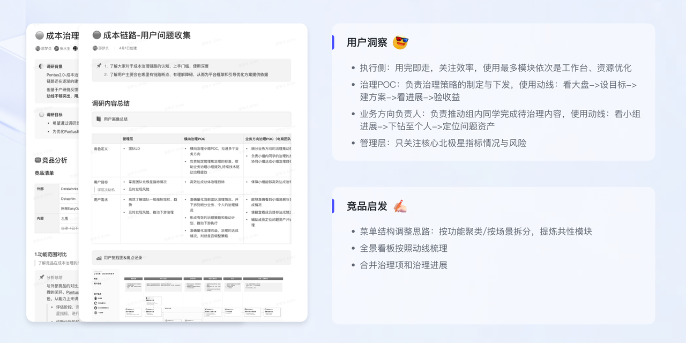

按角色与任务组织
让不同用户从自己的工作目标出发，找到合适的治理入口。
DATA GOVERNANCE
治理平台的复杂性来自场景与角色的叠加。设计的重点，是把分散的模块重新组织成用户能理解、能找到起点、能连续完成的工作路径。

Pontus 同时承载成本、稳定性、报警等治理能力，不同模块分别演进，缺乏统一的顶层规划。用户反馈菜单杂乱、角色视角和操作动线不清晰；随着更多治理能力与用户迁入，框架优化变得更加迫切。
让不同用户从自己的工作目标出发，找到合适的治理入口。
通过治理全景与首页信息整合，建立对平台和任务的整体认知。
补充框架与治理链路引导，降低切换到新结构的学习成本。
从用户反馈出发，检查功能内容、角色边界与视觉一致性，区分结构问题与局部交互问题。
结合用户研究与竞品分析，与产研讨论并对齐导航整合、首页表达和治理流程的设计方向。
按角色和动线整理功能，增加框架引导、治理链路引导与治理全景，帮助用户理解新旧结构的关系。
按角色与治理任务整合功能
补充框架、治理链路与全景说明
原复盘记录了框架与治理引导的满意度反馈；因量表和分值换算口径需要结合原始问卷核对，本页不直接作跨项目分数比较。
框架整合需要以角色和任务为依据，而不只是重新排列菜单。后续应采用一致的量表与任务指标持续验证，并把本期未覆盖的细节体验问题纳入后续迭代。